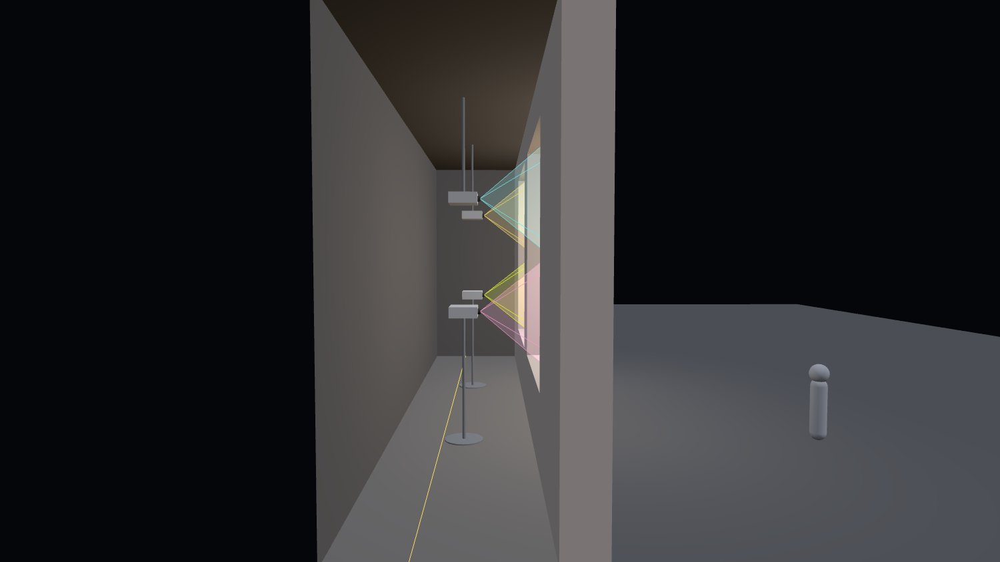
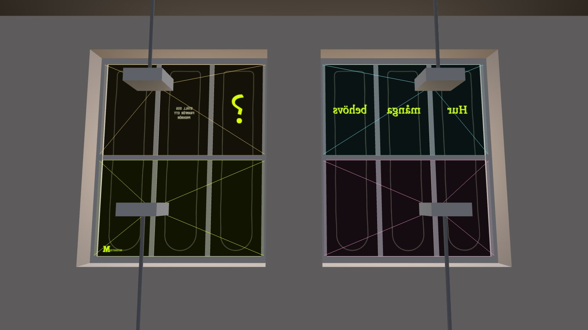

Projektoranalysen är gjord av Linus. Måtten från fotot är gjorda av Lukas.
En projektor per rad om tre rutor, fyra totalt. Skarven hamnar bakom fönstrets tvärpost. Det ryms på 1,5 m med vanligt kort kast, ger nästan dubbelt så mycket ljus som en stående projektor och kostar ungefär en sjättedel. Den övre projektorn hänger i taket och den nedre står på golvet, så att inget stativ skär genom en ljuskägla.
One projector per row of three panes, four in total. The seam lands behind the window's transom. It fits in 1.5 m with an ordinary short throw, gives almost twice the light of a single portrait projector and costs about a sixth. The upper projector hangs from the ceiling and the lower stands on the floor, so no stand cuts through a light cone.
| A: 1 per fönster, stående | B: 2 per fönster, liggande | |
|---|---|---|
| Modell | Panasonic PT-RZ790 + objektiv ET-DLE020 | Epson EB-L210SF eller Optoma ZH450ST |
| Kast som krävs | ≤ 0,28–0,30:1 (specialobjektiv) | ≤ 0,47:1 (vanligt kort kast) |
| Ryms i 1,5 m? | Oklart: projektorns djup med objektiv saknas | Ja, ca 1,37–1,49 m |
| Ljus på filmen | ca 690 lux | ca 1 000–1 200 lux |
| Överspill | ca 0,9 m per fönster hamnar på väggen | nästan inget |
| Hårdvara | ca 50 000 € (≈ 550 tkr) | ca 6 500–8 700 € (≈ 72–96 tkr) |
| Modell | Kast | Ljus | Upplösning | Djup | Pris per styck |
|---|---|---|---|---|---|
| Epson EB-L210SF | 0,45–0,61:1 zoom | 4 000 lm | 1080p | 337 mm | ca 1 630–2 190 € |
| Optoma ZH450ST | 0,496:1 | 4 200 lm | 1080p | 216 mm | ca 1 700–1 840 € |
| Panasonic PT-RZ790 | med objektiv nedan | 7 000 lm | WUXGA | okänt | ca 12 400 € |
| Panasonic ET-DLE020 (objektiv) | 0,280–0,299:1 | okänt | ca 12 400 € |
Priserna kommer från europeiska återförsäljare och är omräknade med en antagen kurs på 11 kr/€. Ljuset är räknat som lumen × 0,85 / bildyta, utan filmens förstärkning, spill och gatubelysning. Det som avgör är en svensk offert och en testkväll på plats. Projektorvyn (Inifrån 3D i skissen) räknar om allt när du byter modell eller djup.
Prices are from European resellers, converted at an assumed 11 SEK/€. Light is estimated as lumens × 0.85 / image area, without screen gain, spill or street lighting. What decides it is a Swedish quote and a test evening on site. The projector view (Inside 3D in the sketch) recalculates everything when you change model or depth.


Skissen använder måtten från fotot (de skiljer sig från briefen). Alla vyer läser samma fil, config/fasad.js, så ändra där när fönstren är uppmätta.
The sketch uses the measurements from the photo (they differ from the brief). Every view reads the same file, config/fasad.js, so change it there once the windows are measured.
| Fotot (används) | Briefen | |
|---|---|---|
| Fönster (karm till karm) | 2,24 × 3,11 m | 2,5 × 3,0 m |
| Ruta | 0,60 m bred · 1,48 m (övre) / 1,28 m (nedre) | ca 0,74 × 1,38 m |
| Spröjs / tvärpost | 0,14 / 0,19 m | 0,07 / 0,07 m |
| Karm | 0,08 m | 0,09 m |
| Mur mellan fönstren | 0,75 m | 0,75 m |
| Fönstrets underkant över mark | 0,75 m | 0,9 m |